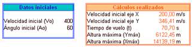
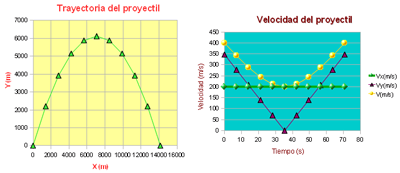
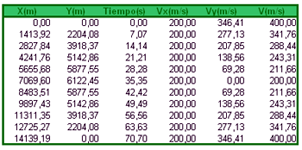

1.1. Aplicaciones de la hoja de cálculo
|
Sistemas de numeración, campo gravitatorio, electromagnetismo, dinámica, energía, son algunos de los campos del ámbito científico donde la aplicación de la hoja de cálculo resuelve gran cantidad de problemas: cálculos con series de datos de tiempo, estudio de intervalos, resolución de ecuaciones, aplicación de modelos y creación de curvas y gráficos. Calcular la trayectoria y la velocidad de un proyectil, por ejemplo, es un ejercicio de física que lleva asociado el trabajo con fórmulas complejas y gran cantidad de datos. La hoja de cálculo resuelve este trabajo y nos permite manipular los datos y obtener los resultados de forma rápida y sencilla, incluidas las gráficas que los representan.  |
|
|

Trayectoria y velocidad de un proyectil
Imagen de elaboración propia |
|
|

Datos de cálculo de la trayectoria de un proyectil Imagen de elaboración propia |
Obra publicada con Licencia Creative Commons Reconocimiento No comercial Compartir igual 4.0